[001] VPN_Tunneling_00.png — 1048x127
[002] VPN_Tunneling_01.png — 1048x130
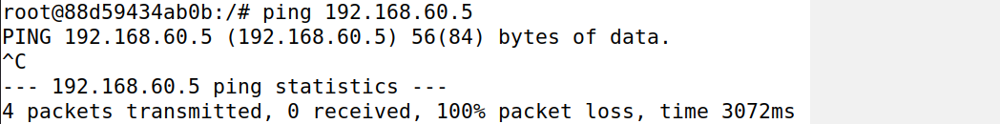
[003] VPN_Tunneling_02.png — 1048x50
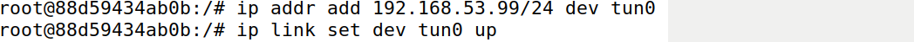
[004] VPN_Tunneling_03.png — 1048x921
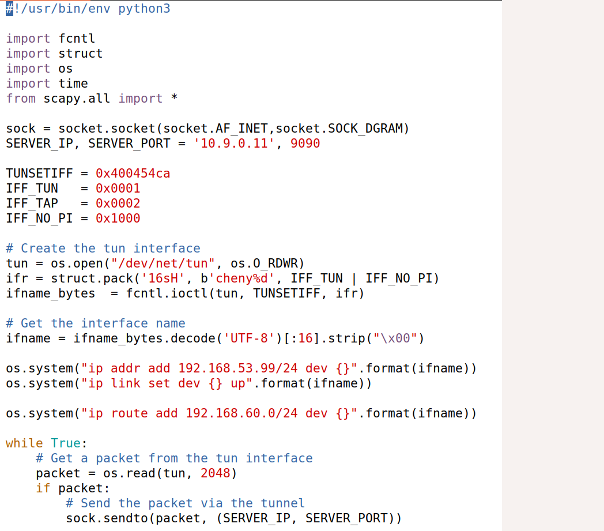
[005] VPN_Tunneling_04.png — 1048x123
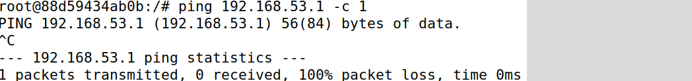
[006] VPN_Tunneling_05.png — 1048x132
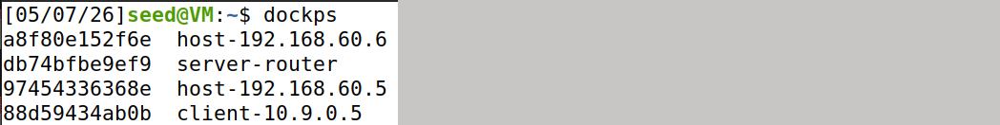
[007] VPN_Tunneling_06.png — 1048x129
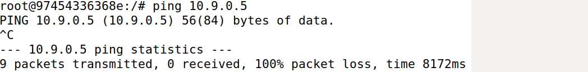
[008] VPN_Tunneling_07.png — 1048x236
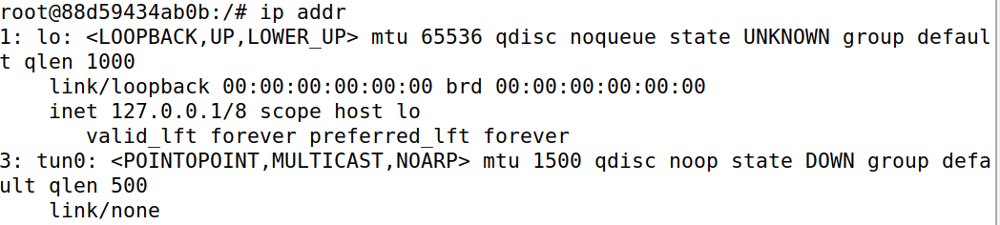
[009] VPN_Tunneling_08.png — 1048x153
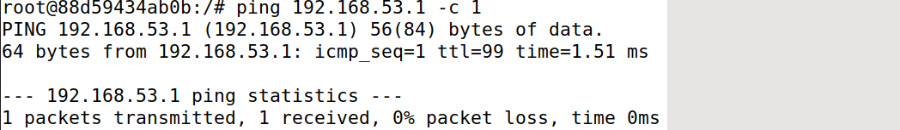
[010] VPN_Tunneling_09.png — 1048x102
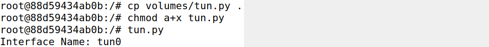
[011] VPN_Tunneling_10.png — 1048x285
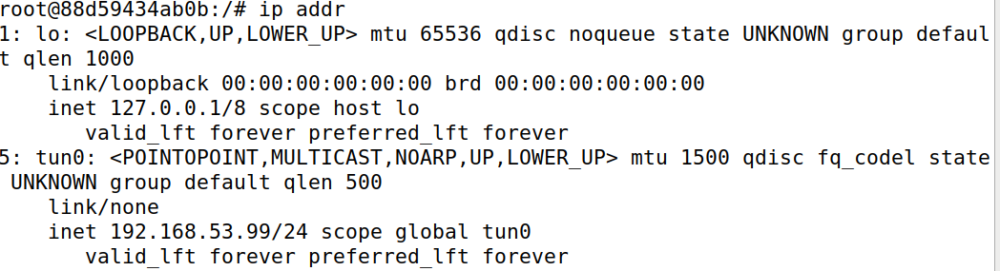
[012] VPN_Tunneling_11.png — 1048x126
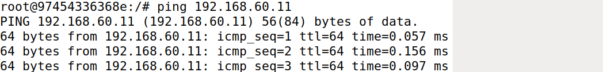
[013] VPN_Tunneling_12.png — 1048x102
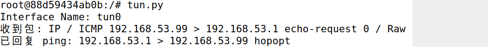
[014] VPN_Tunneling_13.png — 1048x175
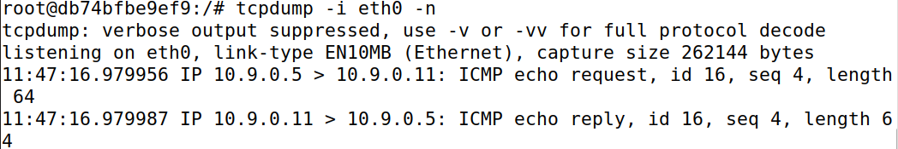
[015] VPN_Tunneling_14.png — 1048x450
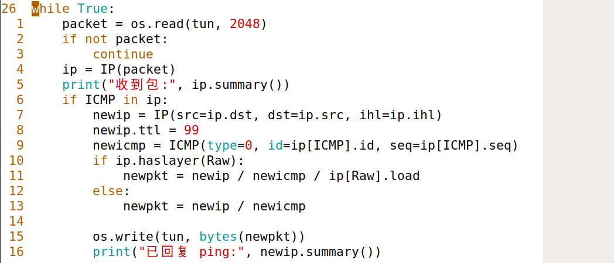
[016] VPN_Tunneling_15.png — 1048x127
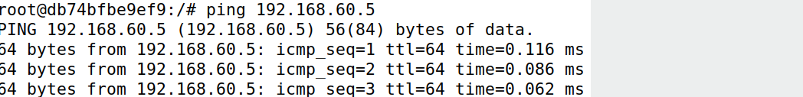
[017] VPN_Tunneling_16.png — 1048x48
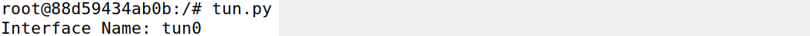
[018] VPN_Tunneling_17.png — 1048x126
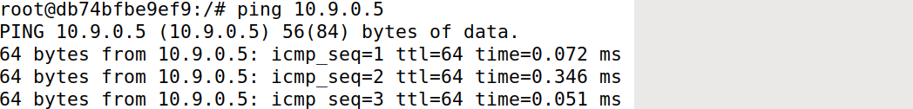
[019] VPN_Tunneling_18.png — 1048x181
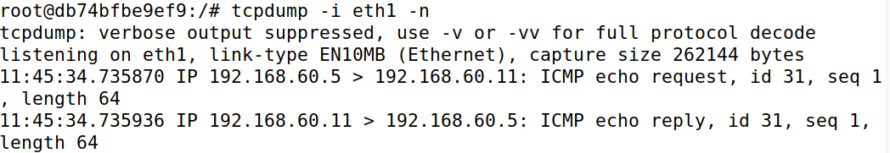
[020] VPN_Tunneling_19.png — 1048x124
[021] VPN_Tunneling_20.png — 1048x419
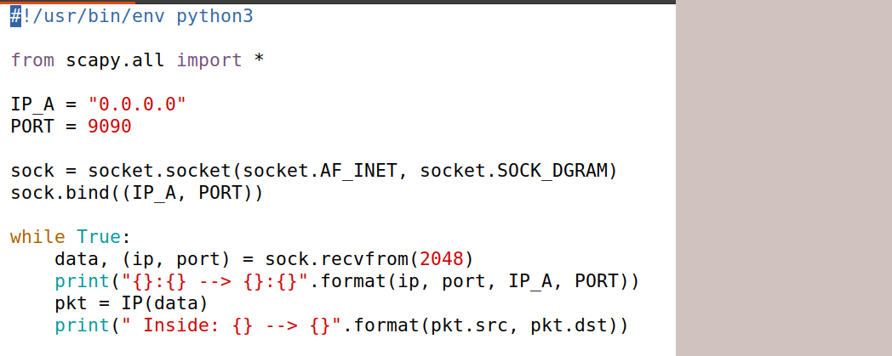